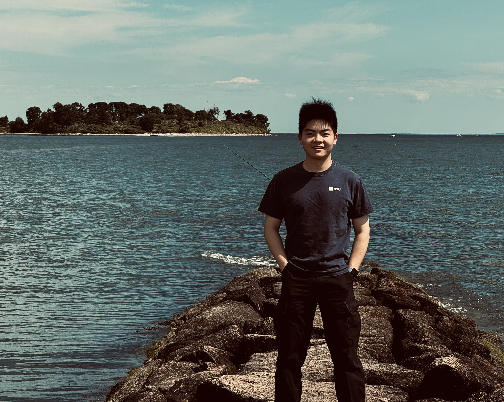
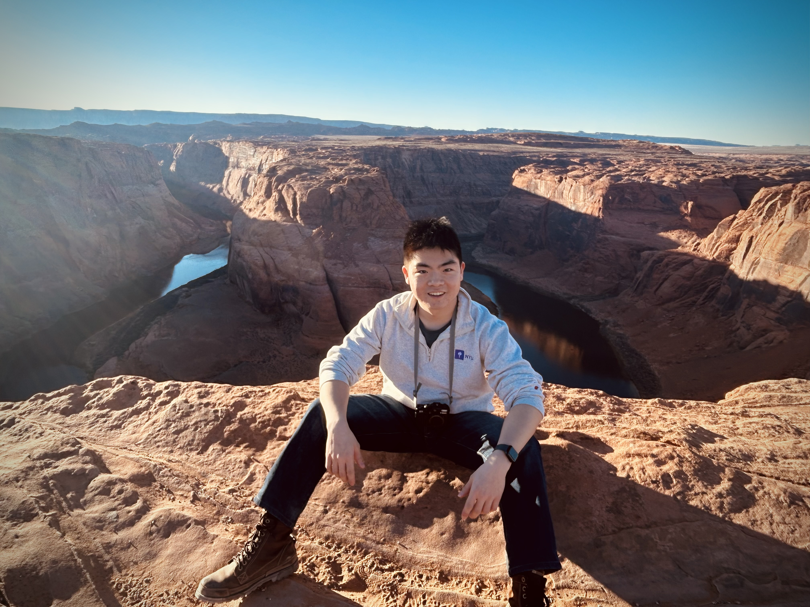
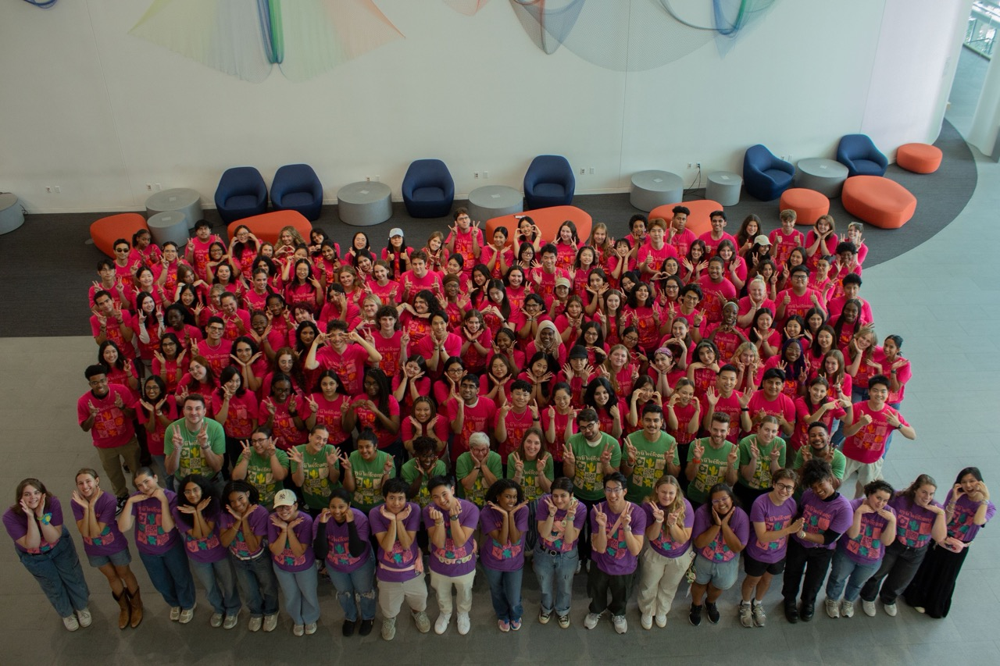
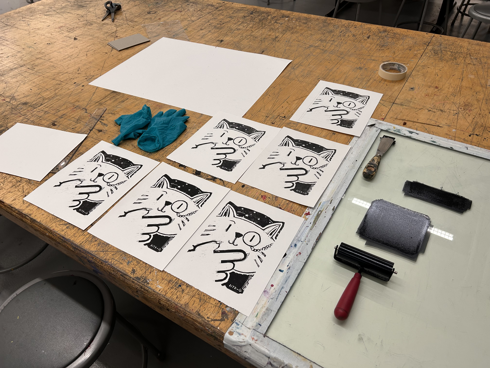
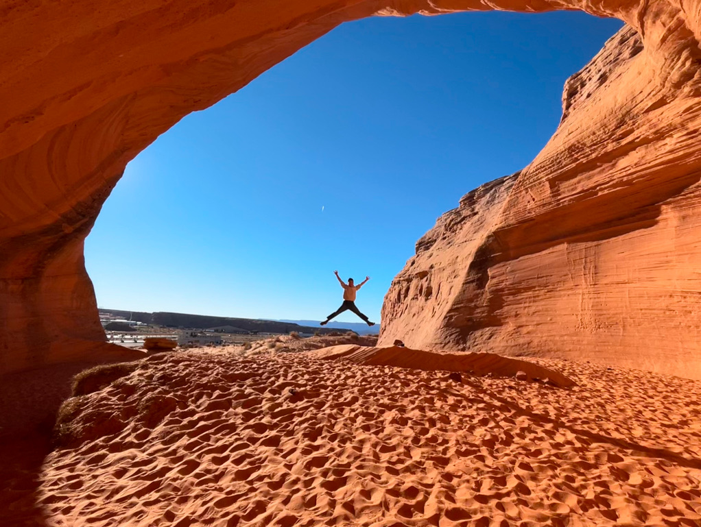

About Me
Hi there, I'm Harrison Gao, an Art Freelancer, Guitar Player, Detective Novel Enthusiast, Traveler, and aspiring Software Development Engineer.
Currently I'm in...
Computer Science Major & Business Studies Minor @ New York University.
Research assistant and CSCI-UA student tutor @ NYU Courant Institution of Mathematics.
Milennium Fellow at United Nation's MCN United Nation Academic Impact.
My Current Time (US Eastern) Loading...
My recent highlights

2025.3
I feel honord attending Professor Wang's colloquium on her latest
paper about Kakeya Conjecture. Although I barely understood the
content, I was impressed by the brilliance of fellow
mathematicians and enthusiasts here at Courant.

2025.1
On my previous trip to the Grand Canyon, I was
thrilled by the great view of horseshoe bend.
This was one of my sublime moments.

2024.8
Being part of NYU Welcome Leader team was one of the brightest
move I've taken in college.
I met new friends, helped incoming students, and reinforced the
"upperclassman" identity. I feel so proud when leading all 3
discussion meetings.
Research Project: 2024 Presidential Election
I was part of
Professor Bari's
predictive analytics lab, working on finding correlation of
merchandise search trendmerchandise search trend
and the election outcome.
You can read more about this
here.

Print-Making: my new hobby
Starting Spring 2025, I started working on a new art media:
printmaking.
I love how print makers describe their art lies in every press and
release.
Check out more of my other arts in the
Gallery
section.

Traveling
I love traveling, photography, recording my life as a little human
on this planet in our Solar system.
Especially given the case that I have to stare at my screen when
I'm working and studying, I seize every chance to "escape" from
tech medias.
I'm considering opening a new "blog" page on this website, where I
can post my pictures and findings on planet Earth. Let's find out~
The picture is a cave that me and my friend Ivan found
during our trip to Grand Canyon. Amazing, right?
